Worum geht es?
Hacken (auch Chratzen) ist ein Schweizer Kartenspiel mit Jasskarten für 3 bis 6 Personen. In der Mitte liegt ein Pot. Wer kauft oder mitgeht, versucht Stiche zu machen, denn jeder Stich bringt einen Teil des Pots. Wer sein Soll nicht schafft, zahlt dafür kräftig in den Pot.
Die Karten
Gespielt wird mit den 36 Deutschschweizer Jasskarten in vier Farben:
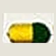
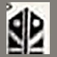
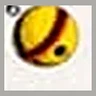
Die Rangfolge ist in jeder Farbe gleich, von hoch nach tief:
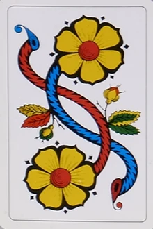
Ass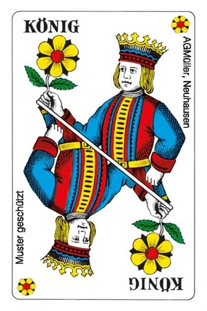
König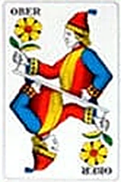
Ober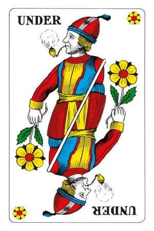
Under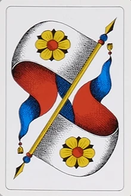
Banner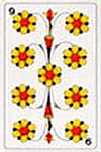
9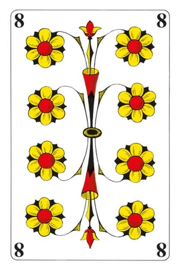
8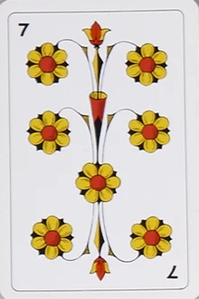
7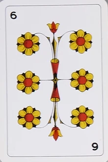
6Jede Karte der Trumpffarbe schlägt jede Karte einer anderen Farbe.
Ablauf einer Runde
1. Einsatz
Einsatz bezahlt wird nur, wenn Pot und Nebenpot leer sind, also in der ersten Runde und in jeder Obli-Runde: Dann zahlen alle den Grundeinsatz (z. B. 1 Punkt) in den Pot. In allen anderen Runden wird um das gespielt, was durch Strafzahlungen im Pot liegt. Der Pot fasst höchstens 20 Punkte, alles darüber kommt in den Nebenpot.
2. Geben
Die Person, die an der Reihe ist, mischt und gibt jedem zuerst 2 Karten verdeckt. Dann wird die nächste Karte offen hingelegt, ihre Farbe ist Trumpf. Danach bekommt jeder nochmals 2 Karten. Nach jeder Runde gibt die nächste Person.
3. Klopfen
Wer zuerst dran ist (der Geber), darf klopfen, aber nur, solange er seine Karten noch nicht angeschaut hat. Will er nicht, schaut er seine Karten an, und die nächste Person darf klopfen, solange auch sie ihre Karten noch nicht kennt.
- Wer klopft, nimmt die offene Trumpfkarte und hat damit 5 Karten.
- Wer klopft, kauft automatisch. Das Kaufen fällt weg.
- Geklopft wird meistens nur, wenn ein Ass oder ein König offen liegt.
4. Kaufen
Hat niemand geklopft, entscheidet jeder der Reihe nach (beginnend beim Geber): kaufen oder passen. Sobald jemand kauft, ist diese Runde des Kaufens vorbei. Der Käufer bekommt die offene Karte nicht.
5. Mitgehen
Wenn jemand gekauft hat, werden alle anderen der Reihe nach gefragt, auch wer vorher gepasst hat. Jeder sagt mitgehen, passen oder «Letzter».
- «Letzter» heisst: Ich gehe mit, aber nur, wenn nach mir niemand mehr mitgeht. Geht danach noch jemand mit, ist man draussen.
- «Letzter» darf nur eine Person sagen, und nur solange noch niemand mitgegangen ist.
- Es muss immer mindestens jemand mitgehen: Hat niemand zugesagt und niemand «Letzter» gesagt, muss der Letzte in der Reihe mitgehen.
6. Tauschen
Erst wenn feststeht, wer mitspielt, wird getauscht:
- Zuerst der Käufer, danach die Mitgeher in der Reihenfolge.
- Jeder darf 0 bis 4 Karten weglegen und gleich viele vom Stapel ziehen.
- Wer geklopft hat (oder in der Obli-Runde gibt), hält 5 Karten: Er wählt frei, welche er tauscht, und legt danach die überschüssige fünfte Karte weg.
- Stall: Wer alle 4 Handkarten tauscht, bekommt 5 neue Karten und legt eine davon weg. Das geht nur, solange nicht alle mitspielen und noch mindestens 5 Karten im Stapel liegen.
7. Stiche spielen
Es werden 4 Stiche gespielt. Der Käufer spielt aus, danach spielt jeweils aus, wer den letzten Stich gemacht hat.
- Farbe angeben: Wer die ausgespielte Farbe hat, muss sie legen.
- Trumpfen: Wer die Farbe nicht hat, muss einen Trumpf legen, nichts anderes.
- Übertrumpfen: Liegt bereits ein Trumpf, muss man einen höheren Trumpf legen.
- Frei: Wer die Farbe nicht hat und keinen (höheren) Trumpf, darf eine beliebige Karte legen.
Den Stich gewinnt der höchste Trumpf, sonst die höchste Karte der ausgespielten Farbe.
Soll und Abrechnung
| Rolle | Soll | Verfehlt |
|---|---|---|
| Käufer | mindestens 2 Stiche | bekommt nichts, zahlt den doppelten Pot |
| Mitgeher | mindestens 1 Stich | bekommt nichts, zahlt den einfachen Pot |
| Passe | – | spielt nicht mit, zahlt nichts |
Den Pot teilen alle, die ihr Soll erfüllt haben. Der Käufer bekommt doppelt so viel wie ein Mitgeher, weil er das grössere Risiko trägt. Gerundet wird auf ganze Punkte, den Rest bekommt der Käufer.
| Pot 20, alle schaffen ihr Soll | Käufer | je Mitgeher |
|---|---|---|
| Käufer + 1 Mitgeher | 13 | 7 |
| Käufer + 2 Mitgeher | 10 | 5 |
| Käufer + 3 Mitgeher | 8 | 4 |
- Wer sein Soll verfehlt, bekommt nichts und zahlt nur: der Käufer den doppelten, ein Mitgeher den einfachen Pot. Sein Anteil geht an die anderen.
- Die Strafzahlungen bilden den neuen Pot (Beispiel erste Runde mit 4 Spielern: Pot 4, verliert der Käufer, zahlt er 8, und in der nächsten Runde liegen 8 im Pot). Was über 20 geht, kommt in den Nebenpot.
- Nach der Abrechnung wird der Pot aus dem Nebenpot wieder auf 20 aufgefüllt, solange dort etwas liegt.
- Sind danach Pot und Nebenpot leer, ist die nächste Runde eine Obli-Runde.
In der App
- Grün umrandete Karten darfst du spielen, alle anderen sind gesperrt. Gold umrandet sind deine Trümpfe.
- Die bereits gespielten Karten aller Gegner siehst du unter ihrem Namen. Die Punkte am Namen zeigen die Stiche und das Soll.
- Gegen den Computer: 2 bis 5 Computer-Gegner. Anzahl, Startguthaben, Grundeinsatz, Pot-Maximum, Tempo und Kartenset stellst du in den Einstellungen ein. Dein Punktestand bleibt in diesem Browser gespeichert.
- Online spielen: Eine Person wählt «Online-Spiel erstellen» und bekommt einen 4-stelligen Code. Die anderen öffnen dieselbe Seite und geben den Code bei «Mit Code beitreten» ein, oder sie öffnen den geteilten Link. Freie Plätze kann der Gastgeber mit Computer-Gegnern füllen (3 bis 6 Spieler).
- Das Gerät des Gastgebers führt das Spiel. Es muss offen bleiben, solange gespielt wird. Verliert jemand die Verbindung, spielt der Computer für ihn weiter, bis er wieder beitritt (gleicher Code, gleiches Gerät und gleicher Browser).